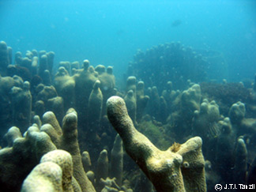
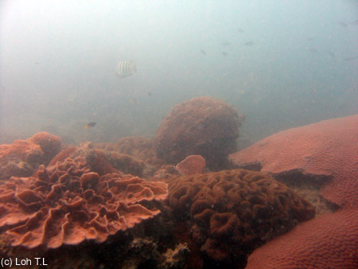
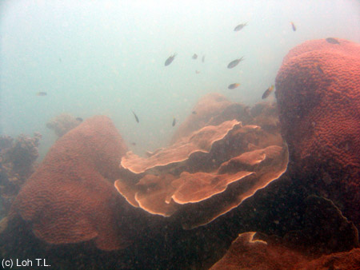

Coral Reefs of Singapore
|
Reef flat at Raffles Lighthouse, 2 May 2003 |
Exposed reef flat - Raffles Lighthouse, 2002. Boulder corals look like brown rocks but they are actually living organisms! |
|
General reef scene - Raffles Lighthouse, 2002. Despite the high levels of sediment in the water, the fringing reef at Raffles Lighthouse still offers and supports a profuse amount of marine life, including fish. |
An assortment of hard coral recruits (juvenile coral colonies) - Raffles Lighthouse, 2002. It is encouraging to see hard coral recruits on Singapore reefs as it shows that corals are still able to reproduce and replenish the reefs. |
Exposed patch reef - Lazarus, 2002. Before the recent reclamation, Lazarus Island was surrounded by a fringing reef and two patch reefs. |
Pavona patch at Raffles Lighthouse, 1 September 2003 |
Raffles Lighthouse reef slope. The soft coral Sarcophyton is one of many organisms that inhabit the coral reef of Raffles Lighthouse. 2 May 2003. |
Raffles Lighthouse. On a good day, you can see schools of fish at Raffles Lighthouse. 2 May 2003. |
Pulau Hantu reef flat, 12 July 2003. During low spring tides, much of the fringing reef flats of the southern islands are exposed. |
 Kusu Island, 7 November 2003. |
Kusu Island, 7 November 2003. |
Raffles Lighthouse western reef, 29 Jan 2004 |
Raffles Lighthouse western reef, 29 Jan 2004 |
Raffles Lighthouse western reef, 2 Jan 2004 |
Raffles Lighthouse western reef, 2 Jan 2004 |
Purple soft coral next to Montipora hard coral, Kusu Island, 10 April 2004 |
Kusu Island lagoon at low tide. Many hard corals can be found together with a host of marine organisms in the swimming lagoon of Kusu Island which are exposed at low tide. 10 April 2004. |
Big DIP (Diploastraeidae: Diploastrea heliopora). Sometimes you come across big colonies of hard corals on S'pore reefs. Given that hard corals grow so slowly (1-15 cm/year), how old do you think this colony is? Pulau Hantu, March 2005. |
Big Diploastrea heliopora, Raffles Lighthouse, March 2005 |
Brain coral, Lobophylliidae: Symphyllia, Pulau Hantu, March 2005 |
Butterflyfish in Acropora staghorn coral, Raffles Lighthouse, March 2005 |
Hard coral garden, Raffles Lighthouse, March 2005 |
Serpent coral field, Euphylliidae: Pachyseris, Pulau Hantu, March 2005 |
Hard coral garden, Raffles Lighthouse, March 2005 |
Hard coral wall, Porites, Montipora, etc., Raffles Lighthouse, March 2005 |
 Hard coral garden, Raffles Lighthouse, March 2005 |
Reef crest, Raffles Lighthouse, March 2005 |
Montipora field, Raffles Lighthouse, March 2005 |
 Hard coral garden, Raffles Lighthouse, March 2005 |
Reef crest, Raffles Lighthouse, March 2005 |
 Hard coral garden, Raffles Lighthouse, March 2005 |
Reef crest, Raffles Lighthouse, 8 April 2015 |
Reef crest, Raffles Lighthouse, 8 April 2015 |
Reef slope, Raffles Lighthouse, 8 April 2015 |